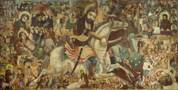

Kerbela Savaşı
Kerbela Savaşı, (10 Ekim 680 [10 Muharrem, H. 61]), Muhammed Peygamber’in torunu ve dördüncü halife Ali’nin oğlu Hüseyin b. Ali liderliğindeki küçük bir grubun Emevî halifesi I. Yezîd tarafından gönderilen bir ordu tarafından yenilgiye uğratıldığı ve katledildiği kısa askerî çarpışma. Bu savaş Emevi hanedanının konumunu sağlamlaştırmaya yardımcı oldu, ancak Şii Müslümanlar (Hüseyin’in takipçileri) arasında 10 Muharrem (ya da ʿĀşūrāʾ) yıllık kutsal bir yas günü haline geldi.
{kind=link}

Kerbela Savaşı, Abbas el-Musavi’nin tuval üzerine yağlıboya eseri, 19. yüzyıl sonu-20. yüzyıl başı.
Brooklyn Müzesi, New York, Nourollah Elghanayan onuruna K. Thomas Elghanayan’ın hediyesi, 2002.6 Creative Commons Attribution 3.0 (Generic)
I. Yezîd 680 baharında babası I. Muâviye’nin yerine halifeliğe geçti. Kûfe şehrinde (günümüz Irak’ında), Müslüman toplumunun (ümmetin) liderliğinin Muhammed’in kuzeni ve damadı Ali b. Ebî Tâlib’e ve onun soyundan gelenlere ait olduğunu savunanlar, Hüseyin’i kendilerine sığınmaya davet ettiler ve onu orada halife ilan ettireceklerine söz verdiler. Yezîd, Kûfe’deki Şiâ’nın isyankâr tavrını öğrendiğinde Basra valisi Ubeydullah’ı düzeni sağlaması için gönderdi. Ubeydullah bunu yaptı, kabile reislerini çağırdı, onları halkının davranışlarından sorumlu tuttu ve misilleme tehdidinde bulundu. Yine de Hüseyin, Kûfe halkı tarafından coşkuyla karşılanmayı umarak ailesi ve maiyetiyle birlikte Mekke’den yola çıktı. Ancak 10 Ekim’de Fırat Nehri’nin batısındaki Kerbela’ya vardığında, Ubeydullah tarafından gönderilen ve Kûfe’nin kurucusunun oğlu Ömer ibn Sa’d’ın komutasındaki belki de 4.000 kişilik büyük bir orduyla karşılaştı. Maiyetinde belki 72 savaşçı adam bulunan Hüseyin, Kûfe’nin vaat ettiği yardıma boş yere güvenerek yine de savaşa katıldı. Kendisi, ailesi ve taraftarlarının neredeyse tamamı öldürüldü. Hüseyin’inki de dâhil olmak üzere ölülerin cesetleri daha sonra parçalandı ve bu durum Şîa’nın sonraki nesillerinin şaşkınlığını daha da artırdı. Aralarında eşlerinden en az birinin, kız kardeşi Zeyneb’in ve hayatta kalan çocuklarının da bulunduğu Hüseyin’e eşlik eden kadınlar önce Kûfe’ye, sonra da çölden geçirilerek Şam’daki Yezîd’e götürülmüştür. Şii geleneğine göre Zeyneb, diğerlerinin yanı sıra Kûfe’de resmen Ubeydullah’ı azarlamış ve Şam’da Yezîd’e meydan okuyarak onun halifelik iddiasını reddetmiştir. Kendisi 681 yılında ölmüştür. Şiîler onun Şam’da gömülü olduğunu savunurlar ve varsayılan mezarı Şiîler için önemli bir hac yeridir. Sünni geleneğe göre ise Kahire’de gömülmüştür.
Ömer, Ubeydullah ve Yezîd, Ali’nin taraftarları tarafından katil olarak görülmeye başlanmış ve o zamandan beri isimleri Şîa tarafından kötülenmiştir. Dünyanın dört bir yanındaki Şii Müslümanlar 10 Muharrem’i bir yas günü olarak kutlar; bazıları Kerbela’daki olayları anmak için Hristiyanların passion oyunlarına benzer dramalar (Arapça’da ta’ziye olarak adlandırılır) sergiler. Bazıları da kendi kendini kırbaçlama (matam) pratiği uygular. Kerbela’daki Hüseyin’in mezarı Şiiler için çok kutsal bir mekândır.